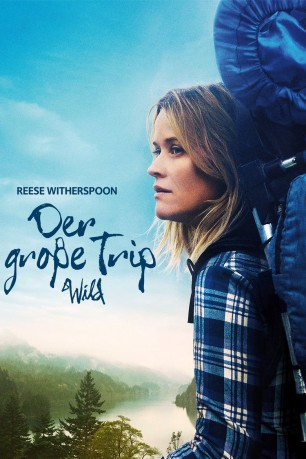

Auszeichnungen: für 2 Oscars nominiert
 gesehen am 07.05.2015
gesehen am 07.05.2015Alternativ: Wild
Auszeichnungen: für 2 Oscars nominiert gesehen am 07.05.2015
 
 IMDB-Wertung: 7.1 / 10
IMDB-Wertung: 7.1 / 10  Metascore:
Metascore: 
Cheryl Strayed musste viele Schicksalsschläge erleiden. Der Verlust ihrer geliebten Mutter und das Ende ihrer Ehe, die an Cheryls Heroinsucht zerbrach, haben sie in ein tiefes Loch fallen lassen. Frustriert, aber auch entschlossen kehrt sie ihrem alten Leben den Rücken zu und begibt sich – ohne geringste Vorkenntnisse und mit viel zu schwerem Rucksack – auf eine 2.000-Kilometer-Wanderung entlang des Pacific Crest Trails. Auf ihrem Weg bekommt Cheryl es mit der geballten Erbarmungslosigkeit der Natur zu tun, doch sie tritt Durst, Hunger, Hitze und Kälte mit immer neuem Mut entgegen. Einmal dem Ruf der Wildnis gefolgt, übersteht sie bald auch Begegnungen mit gefährlichen Raubtieren. Durch all die neuen Erlebnisse relativieren sich die bisherigen Erfahrungen, Erfolge, Rückschläge, Hoffnungen und Ängste der Aussteigerin…
Jahr: 2014
Dauer: 115 Minuten
FSK: 12
Land: USA Studio: Fox Searchlight PicturesTonspuren: DTS - ,
Untertitel: Deutsch,
Auflösung: 1080p (1920x808) Größe: 6318 MB
Genre: Abenteuer, Biographie, Drama
Regisseur: Jean-Marc Vallée
Drehbuch: Nick Hornby, Cheryl Strayed
Soundtrack:
Darsteller:
 Reese Witherspoon als Cheryl
Reese Witherspoon als Cheryl Laura Dern als Bobbi
Laura Dern als Bobbi Michiel Huisman als Jonathan
Michiel Huisman als Jonathan W. Earl Brown als Frank
W. Earl Brown als Frank Gaby Hoffmann als Aimee
Gaby Hoffmann als Aimee Kevin Rankin als Greg
Kevin Rankin als Greg Brian Van Holt als Ranger
Brian Van Holt als Ranger Cliff De Young als Ed
Cliff De Young als Ed Mo McRae als Jimmy Carter
Mo McRae als Jimmy Carter Nick Eversman als Richie
Nick Eversman als Richie Charles Baker als T.J.
Charles Baker als T.J. J.D. Evermore als Clint
J.D. Evermore als Clint Jan Hoag als Annette
Jan Hoag als Annette Jeanine Jackson als Lecturer
Jeanine Jackson als Lecturer Tony Doupe als Man Behind Counter
Tony Doupe als Man Behind CounterDatei: X:\2014(G-M)\Große Trip - Wild, Der (2014, FSK12, 1920x808).mkv seit 05.05.2015
Festplatte: HD 2013(I-Z)-2014(A-Z)
 Es gibt insgesamt 136 Filme in der Gruppe '2014(G-M)'
Es gibt insgesamt 136 Filme in der Gruppe '2014(G-M)'